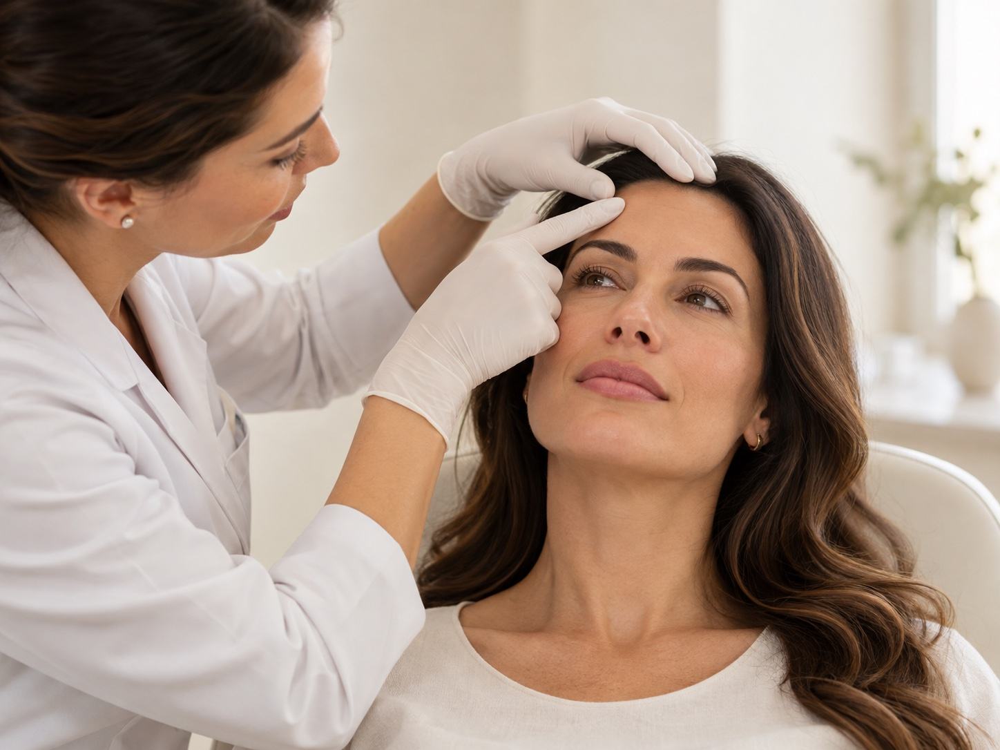
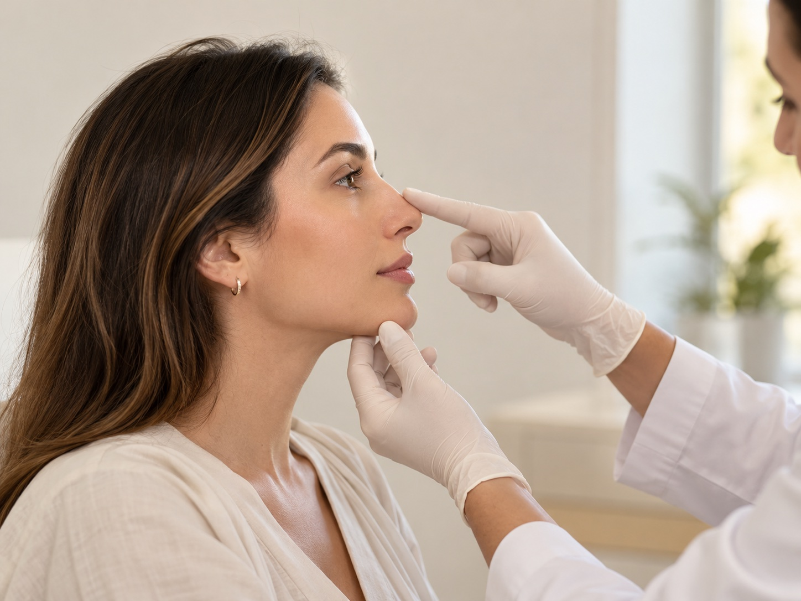
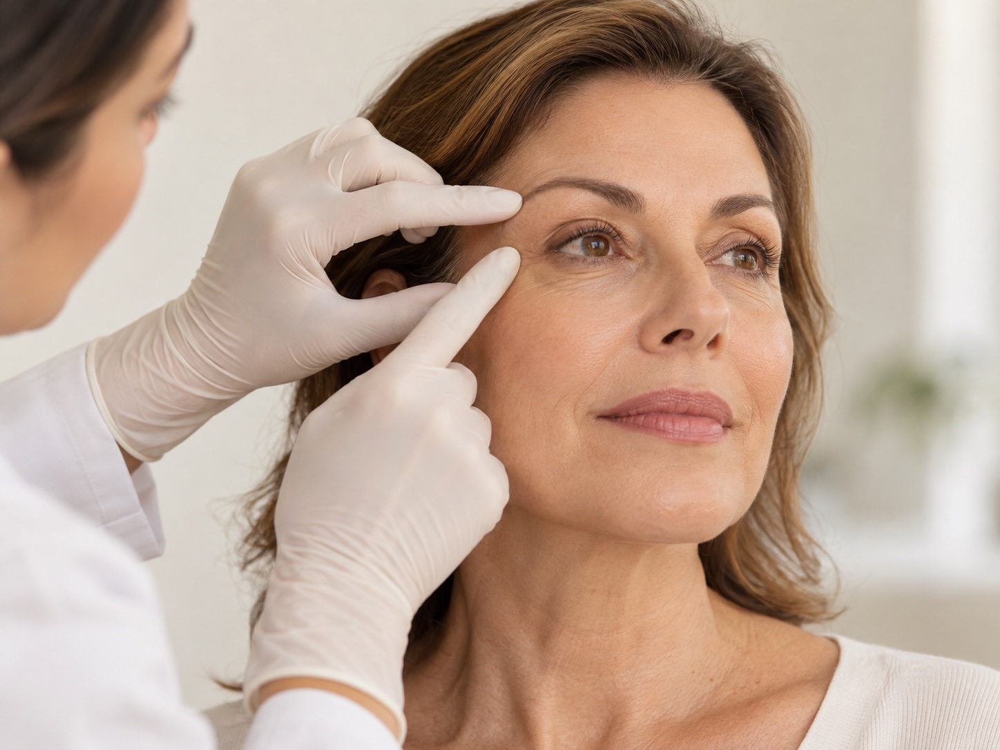

Odontologia
Tratamento ortodôntico
Um sorriso alinhado, com cuidado em cada etapa.
Conheça o tratamento →Conheça as especialidades da Clínica BZ e converse com nossa equipe sobre o seu tratamento.
Um sorriso alinhado, com cuidado em cada etapa.
Conheça o tratamento →
Estética dental para valorizar o seu sorriso.
Conheça o tratamento →
Atenção à saúde, à função e à estética do sorriso.
Conheça o tratamento →
Um cuidado que une saúde bucal e autoestima.
Conheça o tratamento →


Harmonização com atenção à sua individualidade.
Conheça o tratamento →
Atenção aos detalhes e à harmonia dos lábios.
Conheça o tratamento →
Harmonia para diferentes regiões da face.
Conheça o tratamento →
Rejuvenescimento e sustentação facial.
Conheça o tratamento →


Procedimento cirúrgico com avaliação individual.
Conheça o tratamento →Conheça também os resultados publicados pela Clínica BZ na página de resultados reais.